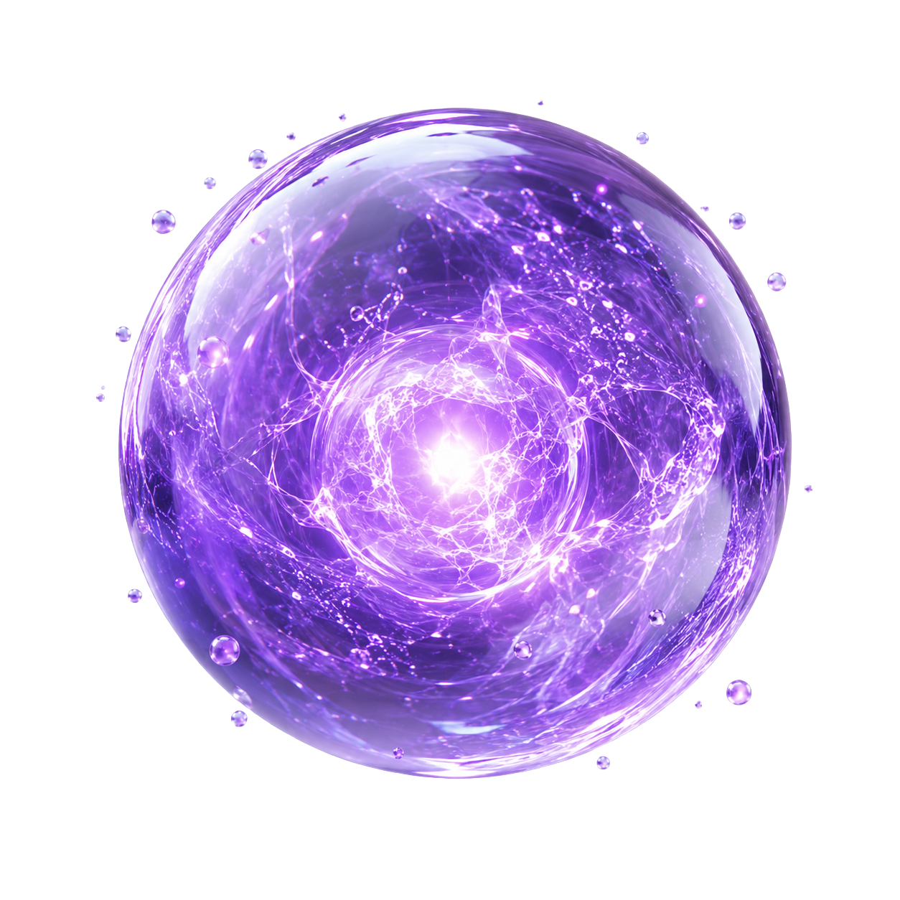
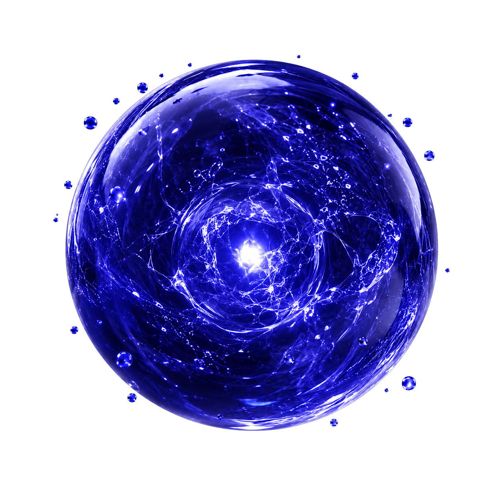
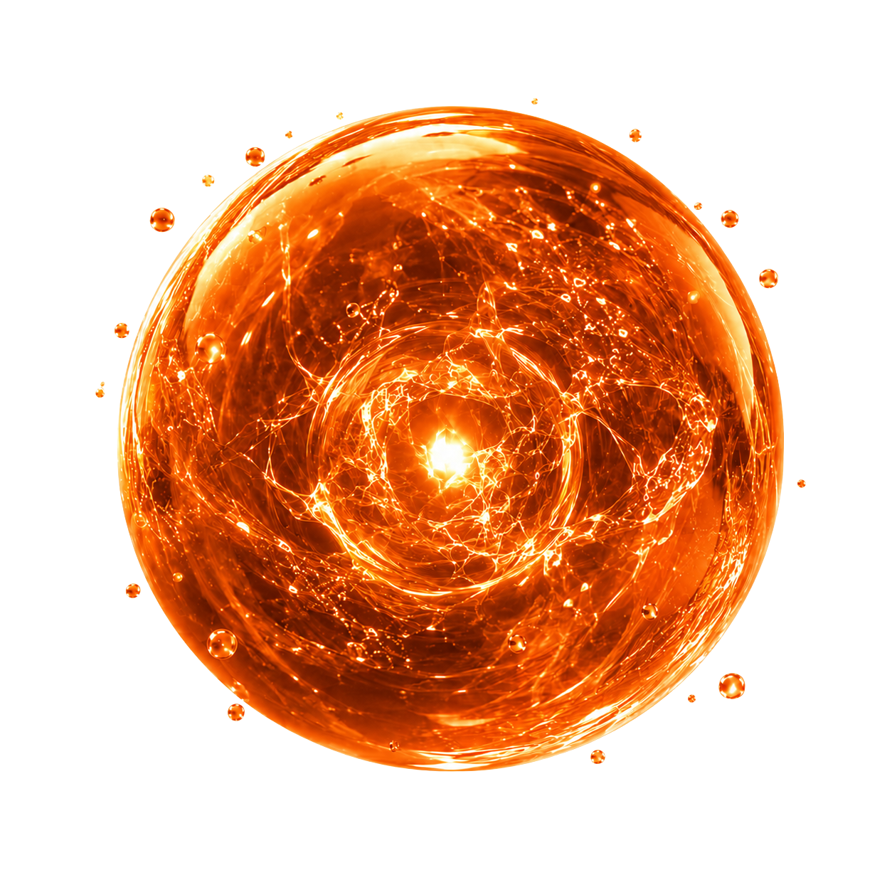
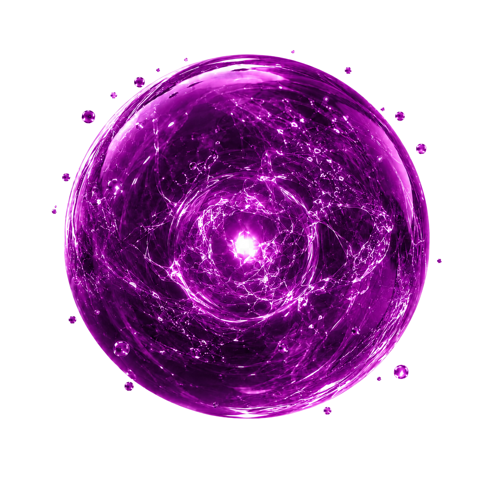
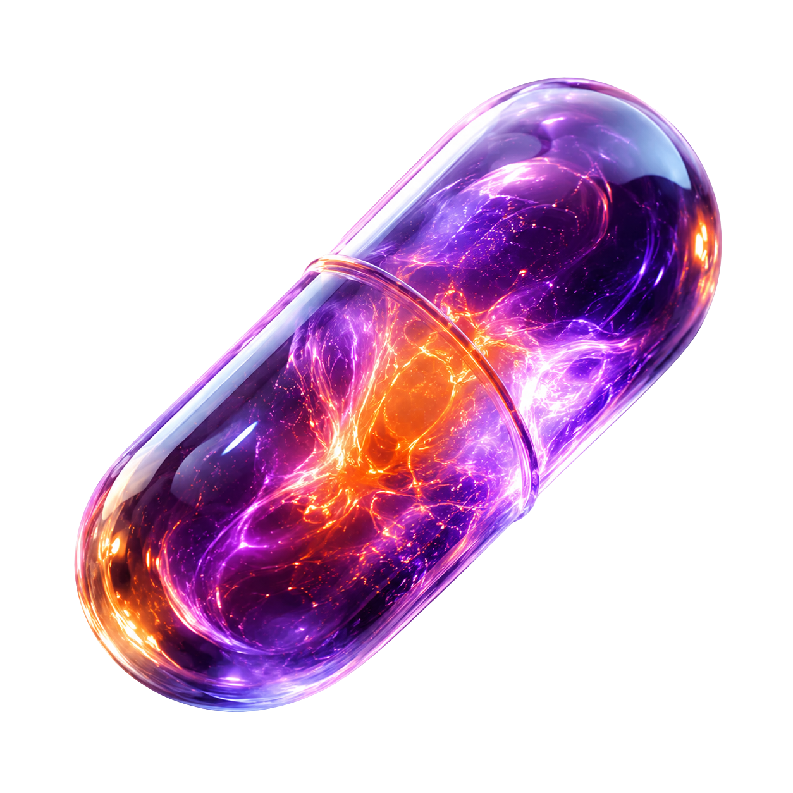
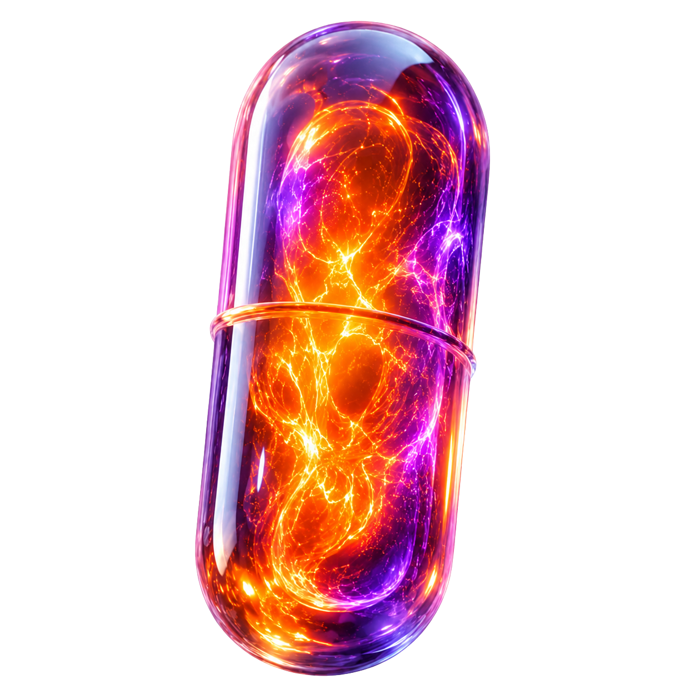

A categoria
Os Prémios Lusófonos da Criatividade em Saúde são um festival internacional, sediado em Portugal, dedicado a reconhecer os melhores projetos de criatividade, comunicação e inovação na área da saúde nos países de língua oficial portuguesa.


Hoje, falar de saúde é compreender comportamentos, alegrias, prazeres e dores. Em um mundo onde nosso aprendizado começa no digital, é essencial lembrar que o toque humano faz parte dessa equação.
Acharam surreal a criatividade falar a língua da saúde? Surreal seria ela não falar.
Porque antes de ser dado, diagnóstico, tecnologia, saúde é relação. A saúde acontece entre pessoas, e criatividade é o jeito de transformar essa relação.